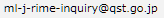

2010年より約1年に一度、J-RIMEに参加の学協会、メンバーによる総会を開催しています。
| 会合名・日程日程・場所 | 配布資料・議事概要 |
|---|---|
| J-RIME第1回全体会議 日時：2010年12月6日（月）14：00〜16：30 場所：UDXカンファレンスRoom E（東京秋葉原） |
配布資料 議事概要 |
| J-RIME第2回全体会議 日時：2011年9月3日（土）10：30〜12：30 場所：ベルサール八重洲 Room E（東京） |
配布資料 議事概要 |
| J-RIME第3回全体会議 日時：2012年4月14日（土）16：00〜17：30 場所：パシフィコ横浜 国立大ホール N101（横浜） |
配布資料 議事概要 |
| J-RIME第4回総会 日時：2013年1月15日（土）14：00〜16：00 場所：UDX Galllery 4F NEXT-2（東京） |
配布資料 議事概要 |
| J-RIME第5回総会 日時：2013念4月12日（金）15：40〜17：00 場所：パシフィコ横浜 国立大ホール N101（横浜） |
配布資料 議事概要 |
| J-RIME第6回総会 日時：2014年4月12日（土）15：15〜16：05 場所：パシフィコ横浜 国立大ホール N101（横浜） |
配布資料 議事概要 |
| J-RIME第7回総会 日時：2015年4月18日（土）15：00〜16：35 場所：パシフィコ横浜 国立大ホール N101（横浜） |
配布資料 議事概要 |
| J-RIME第8回総会 日時：2016年4月17日（日）13：15〜14：40 場所：パシフィコ横浜 会議センター 413室（横浜） |
配布資料 議事概要 |
| J-RIME第9回総会 日時：2017年4月16日（日）14：15〜15：45 場所：パシフィコ横浜 会議センター 413室（横浜） |
配布資料 議事概要 |
| J-RIME第10回総会 日時：2018年4月14日（土）13：00〜14：45 場所：パシフィコ横浜 展示ホール ハーバーラウンジA（横浜） |
配布資料 議事概要 |
| J-RIME第11回総会 日時：2019年4月13日（土）14：30〜16：00 場所：TKPガーデンシティPREMIUMみなとみらいホールG（横浜） |
配布資料 議事概要 |
| J-RIME第12回総会 日時：2020年4月11日（土）14：00〜15：30 場所：Zoomを利用したWeb会議 |
配布資料 議事概要 |
| J-RIME第13回総会 日時：2021年7月21日（水）18：00〜19：20 場所：Zoomを利用したWeb会議 |
配布資料 議事概要 |
| J-RIME第14回総会 日時：2022年5月30日（月）13：00〜15：00 場所：Teamsを利用したWeb会議 |
配布資料 議事概要 |
| J-RIME第15回総会 日時：2023年5月8日（月）10：00〜11：40 場所：Teamsを利用したWeb会議 |
配布資料 議事概要 |
会則12条により目的の事業を行うためにJ-RIMEはワーキンググループを設置することができます。
| 会合名・日程日程・場所 |
|---|
| DRL-WG第1回会合 日時：2014年8月2日（土） |
| DRL-WG第2回会合 日時：2014年12月7日（日） |
| DRL-WG第3回会合 日時：2017年12月3日（日）13：00〜16：00 場所：TKP東京駅八重洲カンファレンスセンター 4N |
| DRL-WG第4回会合 日時：2018年12月23日（日）13：30〜16：00 場所：TKP東京駅前会議室 カンファレンスルーム 1 |
| DRL-WG第5回会合 日時：2019年7月13日（土）13：30〜16：30 場所：TKPスター貸会議室 日本橋 カンファレンスルーム3B |
| DRL-WG第6回会合 日時：2019年12月15日（土）13：30〜16：30 場所：TKP東京駅前会議室 カンファレンスルーム 1 |
| DRL-WG第7回会合 日時：2020年2月23日（日）17：30〜19：30 場所：TKP東京駅前会議室 カンファレンスルーム 1 |
| DRL-WG第8回会合 日時：2023年1月16日（月）17：00〜18：00 場所：Teamsを利用したWeb会議 |
| DRL-WG第9回会合 日時：2023年6月26日（月）18：00〜19：00 場所：Teamsを利用したWeb会議 |
| DRL-WG第10回会合 日時：2023年9月4日（月）15：00〜16：00 場所：Teamsを利用したWeb会議 |
| DRL-WG第11回会合 日時：2023年10月29日（月）15：00〜16：00 場所：Teamsを利用したWeb会議 |
事務局 所在地
〒263-8555
千葉県千葉市稲毛区穴川4-9-1
国立研究開発法人
量子科学技術研究開発機構
放射線医学研究所
放射線規制科学研究部
E-mail: 